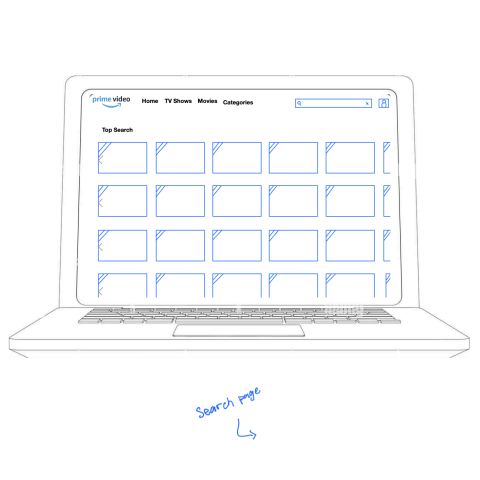

In 2006, renowned Internet-based enterprise Amazon launched a worldwide streaming service: Amazon Unbox. More than 15 years later, there has been countless name changes, design variations and technological advancements. Today, Amazon Prime Video is a formidable contender for the title of best streaming service.
How can we ensure the victory of Amazon Prime Video as the best streaming service?
The answer comes from evaluating the user experience.
Over the course of 14 weeks, our team has carefully studied various topics of User Interface (UI) and User Experience (UI) design. Concurrently, our team initiated an investigation into the current Amazon Prime Video user experience with the goal of evaluating UI/UX flaws and identifying various solutions to help make Amazon Prime Video not just a contender, but the clear winner of the title of best streaming service. The following content describes the research and design journey that our team undertook.
01.
PRELIMINARY INVESTIGATION
In order to ensure that Amazon Prime Videos was a good candidate for our project of redesigning a user experience, our team completed a preliminary investigation of the current user experience. During such, we identified both strengths and critiques, as well as possible improvements for those critiques.
Initial Assessment Results:
STRENGTH
Prime Video has global reach and access for users.
STRENGTH
Service is affordable and inclusive of all content types.
STRENGTH
Data usage of streaming is limited to benefit the user.
CRITIQUE (1)
Text descriptions vary in appearance across content.
CRITIQUE (2)
User experience varies based on platform.
CRITIQUE(3)
TV navigation requires excess button use.
IMPROVEMENT (1)
Determine user preference and apply to all content.
IMPROVEMENT (2)
Conform all platforms to a preferred display.
IMPROVEMENT (3)
Program unused buttons to access menu.
Pitching to Our Clients:
After the preliminary investigation, it was necessary to prepare a presentation for our clients in which we detailed the found strengths, critiques and improvements. A recorded video of this presentation is available below:
02.
FORMAL INVESTIGATION
Following a successful pitch, it was necessary for our team to expand our preliminary investigation of the Amazon Prime User Experience.
Brand Research:
“Since 2014, consumer spending on home entertainment in the United States has been on the rise, growing from under 18 billion U.S. dollars per year to over $30 billion as of 2020. This industry has changed drastically in the past decade, … and this change in consumption gives room for other services and players to grow.” 1
In order to further impress upon our client their need for our design evaluation and solutions, beyond their original acceptance of our pitch, our team researched the business standards that support the need for an excellent user experience in streaming applications.
Amazon is uniquely positioned within the video-on-demand (VOD) industry, given that millions of consumers already use the company’s other services. These services include everything from shopping to cloud computing. 2
More than 80% of Americans use subscription VOD services. Along with VOD, subscriptions for streaming services and electronic sell-through are surging within the market. Out of these three services, video subscription streaming services are the most profitable type of digital home entertainment in the United States. 3
Around 56% of people from the United States, ages 18 to 34, stated that they currently subscribe to on-demand services. Over 66% of people ages 35 to 44 indicated that they have an Amazon Prime subscription. 4
30% of Americans aged 35 to 44 stated in a survey that they watch or stream movies every day, and another 30% watch or stream several times per week. 5
Types of User Experiences:
A major contributor to our design investigation was the recognition that the Prime Video user experience is different depending on what type of device a user has. While there are countless types of device brands and models, we ultimately focused on three standard devices: a mobile phone, a desktop and a television screen.
Journey Maps:
Having identified the three main devices, it was necessary to individually analyze them. By creating journey maps, we were able to evaluate the current user experience on each device.
Possible Issues and Solutions:
Following the utilization of the journey maps, our team devloped a list of potential issues in the current Amazon Prime user experiences. We then identified potential solutions for each issue.
03.
DESIGN BRAINSTORMING
With our established list of potential issues and solutions, it was then necessary to determine the reality and proportionality of each issue, as well as which solution would be best to implement. This process took a vast amount of teamwork and collaboration in which we analyzed and discussed all possible solutions.
04.
INSIGHTS & DECISIONS
Following the extensive brainstorming of design solutions, our team developed multiple insights, and then decided which to act upon given our time and resource constraints.
Insights:
Amazon Prime Video should aim to provide a clean and consistent experience across platforms, regardless of the device type.
Amazon Prime Video should aim to be a “one-stop-shop” for all streaming services by providing customers the same level of access to content as other streaming services, at the same price or better.
Amazon Prime Video should maintain it's reputation for knowing its’ customers by providing them with relevant content recommendations.
Decisions:
While the second and third insights above were out of our team's scope, the first insight regarding a clean and consistent Prime Video design across platforms became the official goal of our experience redesign.
05.
WIREFRAME SOLUTIONS
With the goal of redesigning the Prime Video user experience to be clean and consistent across platforms, our team turned to the drawing board. We identified the current mobile design to be the best of the three experiences, and therefore began with the subtle redesign of the mobile phone, before relating that design onto the desktop and television experiences.
Mobile Wireframe Designs:
1) The user opens the application. The Prime Video logo is displayed as the loading screen.
2) The user is presented with the standard Amazon application sign-in screen, or with the ability to create a standard Amazon account. This page conforms with other Amazon products, and is not exclusive to the Prime Video application, creating a consistent experience across products.
3) The user is brought to the the home screen. The menu has been altered to include the search icon at the top right of the screen, and the other standard menu icons (such as home) at the bottom. The main carousel of the home screen has been updated to show the content in an exclusive, expanded form.
4) If the user selects the search icon from the home screen, they are brought to a standard search screen with the statistical top searches underneath. It is no longer cluttered with miscellaneous categories.
5) If the user selects the categories icon from the home screen, they are brought to a screen of the top categories, and then a list of all categories in alphabetical order.
6) If the user selects their profile from the home screen, they are brought to their profile. This is a redesigned screen that is standard to other Amazon services.
7) If the user selects their account from the profile screen, they are brought to their account settings. This is a redesigned screen that is standard to other Amazon services.
Desktop Wireframe Designs:
1) The user opens the application. The Prime Video logo is displayed as the loading screen.
2) The user is presented with the standard Amazon application sign-in screen, or with the ability to create a standard Amazon account. This page conforms with other Amazon products, and is not exclusive to the Prime Video application, creating a consistent experience across products.
3) The user is brought to the the home screen. The menu has been altered to include the search icon at the top right of the screen, and the other standard menu icons (such as home) at the bottom. The main carousel of the home screen has been updated to show the content in an exclusive, expanded form. This redesigned format matches the layout of the mobile device.

4) If the user selects the search icon from the home screen, they are brought to a standard search screen with the statistical top searches underneath. It is no longer cluttered with miscellaneous categories.
5) If the user selects the categories icon from the home screen, they are brought to a screen of the top categories, and then a list of all categories in alphabetical order.
6) If the user selects their profile from the home screen, they are brought to their profile. This is a redesigned screen that is standard to other Amazon services.
7) If the user selects their account from the profile screen, they are brought to their account settings. This is a redesigned screen that is standard to other Amazon services.
Television Wireframe Designs:
1) The user opens the application. The Prime Video logo is displayed as the loading screen.
2) The user is brought to the the home screen. The menu has been altered to include the search icon at the top right of the screen, and the other standard menu icons (such as home) at the bottom. The main carousel of the home screen has been updated to show the content in an exclusive, expanded form. This redesigned format matches the layout of the mobile device.
3) If the user selects the search icon from the home screen, they are brought to a standard search screen with the statistical top searches underneath. It is no longer cluttered with miscellaneous categories.
4) If the user selects the categories icon from the home screen, they are brought to a screen of the top categories, and then a list of all categories in alphabetical order.
5) If the user selects their profile from the home screen, they are brought to their profile. This is a redesigned screen that is standard to other Amazon services.
6) If the user selects their account from the profile screen, they are brought to their account settings. This is a redesigned screen that is standard to other Amazon services.
06.
FINAL SOLUTIONS
In order to ensure that Amazon Prime Videos was a good candidate for our project of redesigning a user experience, our team completed a preliminary investigation of the current user experience. During such, we identified both strengths and critiques, as well as possible improvements for those critiques.